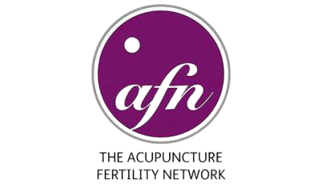

Natural, personal care for pain, stress, fertility, women's health and digestion, from a practitioner with 20 years' experience.
York Traditional Acupuncture is a leading provider of acupuncture in York. Since opening our doors in 2011, we've treated hundreds of people with all sorts of conditions, and every plan is built around the person in front of us.
Whatever you're going through, acupuncture may be able to help, alongside your other care.
Back pain, headaches, arthritis and more, when medication hasn't been enough.
Learn more →Support for both partners, including alongside IVF and assisted fertility.
Learn more →Restore the balance of your mental, physical and emotional health.
Learn more →Period pain, mood swings and menopausal symptoms, treated naturally.
Learn more →An all-natural approach, without giving up healthy and tasty food.
Learn more →Morning sickness, breech babies, preparing for labour and postnatal care.
Learn more →Tiziana is very professional and incredibly understanding, I always felt safe and relaxed during the sessions. … 100% recommend.Jakub Watrobski
Having had acupuncture from several practitioners I find Tiziana amazing… Truly it is her gift and I feel blessed that she shares it so.G. Wright
I know good ones, even excellent ones. But Tiziana is out of category, she is a magician!John D.
Memberships & approvals

What the Chinese Medicine body clock says about waking in the night, and how acupuncture may help.
FertilityFor many people, IVF can feel all-consuming. How acupuncture fits alongside treatment.
FertilityMale factors contribute to many cases of infertility, yet they're often overlooked.
For a personalised plan, or if you have questions about traditional acupuncture, we'd love to hear from you.